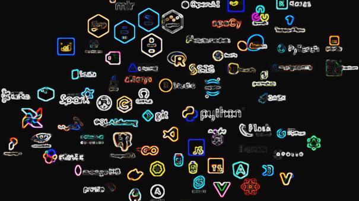
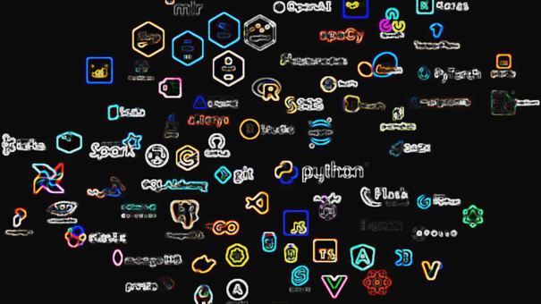

Introduction#
La programmation est devenue une compétence essentielle dans notre monde moderne, où les technologies évoluent rapidement et où les données jouent un rôle central dans la prise de décision. Python, en particulier, a émergé comme l’un des langages de programmation les plus populaires et les plus accessibles, utilisé par des professionnels dans divers domaines tels que la science des données, le développement web, l’automatisation, et bien d’autres.
Objectifs du Projet#
Ce projet vise à introduire les fondamentaux de la programmation en Python et à fournir aux apprenants les compétences nécessaires pour débuter dans ce langage. À travers une série de sections, nous allons explorer les concepts clés, les structures de données, et les bibliothèques qui font de Python un outil puissant pour l’analyse de données.
Nous aborderons des thèmes tels que :
La syntaxe de base de Python, y compris la déclaration de variables, les types de données et les opérateurs.
Les structures de contrôle de flux, comme les conditions et les boucles.
Les bibliothèques essentielles pour la manipulation et la visualisation des données, telles que NumPy, Pandas, Matplotlib et Seaborn.
Contenu du Projet#
Le projet est structuré en plusieurs sections, chacune dédiée à un aspect spécifique de la programmation en Python :
Introduction à Python : Une vue d’ensemble du langage, de ses caractéristiques et de ses applications.
Syntaxe de Python : Exploration des éléments syntaxiques de base, y compris les variables, les types de données, et les opérateurs.
Structures de Données : Présentation des principales structures de données en Python, comme les listes, les tuples, et les dictionnaires.
Bibliothèques Python : Introduction aux bibliothèques clés pour l’analyse de données, notamment NumPy, Pandas, Matplotlib et Seaborn.
Exemples Pratiques : Cas d’utilisation et exemples de code pour illustrer les concepts abordés.
Conclusion : Résumé des compétences acquises et recommandations pour les étapes suivantes dans l’apprentissage de Python.
Importance de Python dans l’Analyse de Données#
Python est devenu le langage de choix pour de nombreux analystes de données et scientifiques en raison de sa simplicité et de sa flexibilité. Sa syntaxe claire et lisible permet aux développeurs de se concentrer sur la résolution de problèmes plutôt que sur la complexité du langage. De plus, l’écosystème de bibliothèques Python offre des outils puissants pour la manipulation, l’analyse et la visualisation des données, ce qui en fait un langage idéal pour l’analyse de données.
En suivant ce projet, vous développerez une compréhension solide des concepts fondamentaux de la programmation en Python et serez en mesure d’appliquer ces compétences à des projets d’analyse de données. Que vous soyez débutant ou que vous souhaitiez renforcer vos compétences, ce projet vous fournira une base solide pour progresser dans votre parcours d’apprentissage.
Prêt à plonger dans le monde passionnant de la programmation en Python ? Commençons !